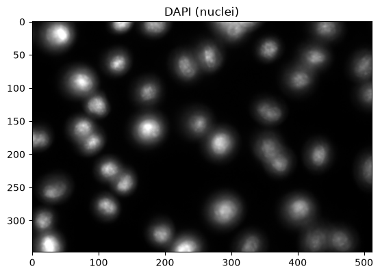
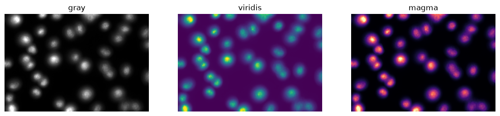
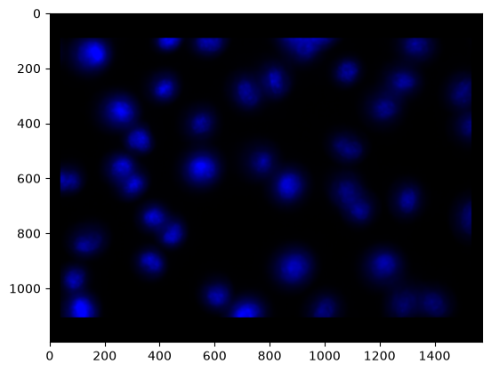
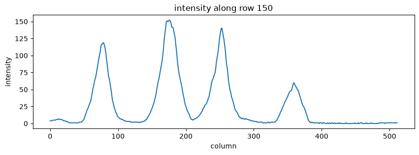
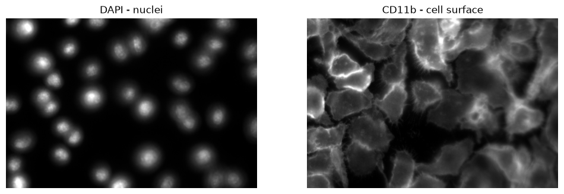
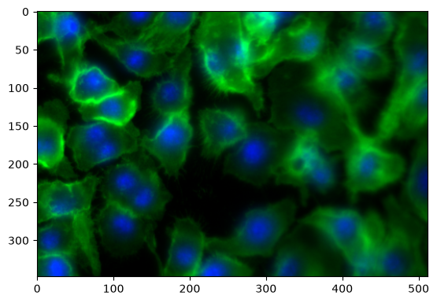
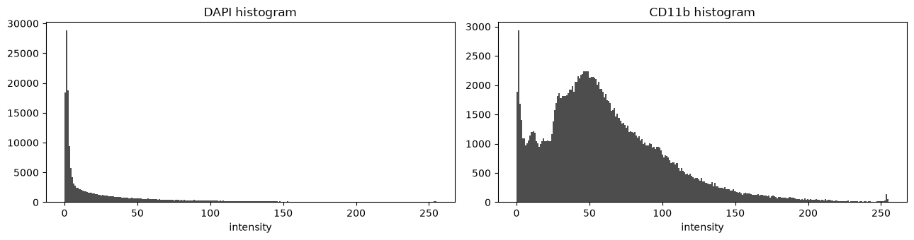
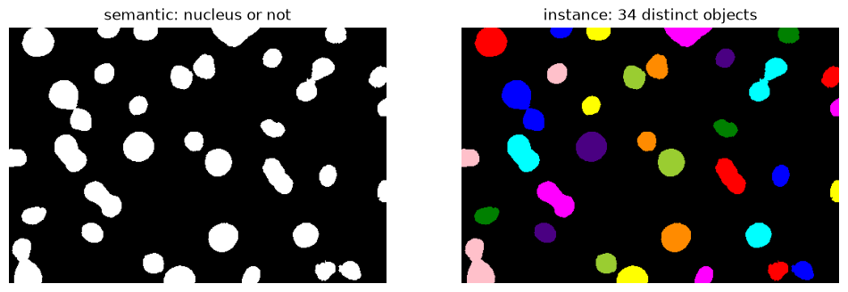

Basic image handling#
Duration ~45 min · Session Day 1, Python notebooks
This notebook covers
what an image is to a computer, and how to read its shape and data type
cropping, slicing and indexing, the same way a list is indexed
displaying images and channels, and building a composite
reading a histogram, and using it to choose a threshold
interactive visualization in the notebook and in napari
turning an image into a binary image, and a binary image into counted objects
Data: data/bbbc020/ field 2h_1: mouse bone-marrow macrophages, two
channels.
DAPI stains nuclei; CD11b stains the cell surface. These are the same images
segmented in the Fiji practical.
1. An image is an array of numbers#
Key properties of a NumPy array:
Property |
Meaning |
Example |
|---|---|---|
|
Dimensions (rows, cols, …) |
|
|
Data type of elements |
|
|
Number of dimensions |
|
|
Value range |
|
import numpy as np
import tifffile
import os; os.environ["DISPLAY"] = ":1"
from course import DATA, show
# The same field you worked on in Fiji.
nuclei = tifffile.imread(DATA / "bbbc020" / "images" / "2h_1_nuclei.tif")
print("type :", type(nuclei))
print("shape:", nuclei.shape)
print("dtype:", nuclei.dtype)
print("range:", nuclei.min(), "to", nuclei.max())
type : <class 'numpy.ndarray'>
shape: (348, 512)
dtype: uint8
range: 0 to 255
Three things to take from that output.
shape is (rows, columns): 348 rows by 512 columns. Note the order:
height first, then width. This trips up nearly everyone at least once, because
Fiji’s status bar reports it the other way round, as width × height.
dtype is uint8: an unsigned 8-bit integer, so every pixel is a whole
number from 0 to 255. This is the “8-bit” shown in Fiji’s Image ▸ Type menu.
A 16-bit image (uint16) would run 0–65535.
The image is just a NumPy array. There is no special image object, so everything that holds for arrays holds here, and everything in this notebook transfers to any other numerical data.
# A pixel is one number. Row 187, column 234 lands on background:
print("background pixel (187, 234):", nuclei[187, 234])
# ...and this one lands inside a nucleus.
print("nucleus pixel (336, 25):", nuclei[336, 25])
background pixel (187, 234): 2
nucleus pixel (336, 25): 255
2. Visualizing an image#
Within the notebook#
The simplest way to look at an image is to use matplotlib.pyplot.imshow().
import matplotlib.pyplot as plt
# let's have a look at the `imshow` function to see what arguments it takes
plt.imshow?
Signature:
plt.imshow(
X: 'ArrayLike | PIL.Image.Image',
cmap: 'str | Colormap | None' = None,
norm: 'str | Normalize | None' = None,
*,
aspect: "Literal['equal', 'auto'] | float | None" = None,
interpolation: 'str | None' = None,
alpha: 'float | ArrayLike | None' = None,
vmin: 'float | None' = None,
vmax: 'float | None' = None,
colorizer: 'Colorizer | None' = None,
origin: "Literal['upper', 'lower'] | None" = None,
extent: 'tuple[float, float, float, float] | None' = None,
interpolation_stage: "Literal['data', 'rgba', 'auto'] | None" = None,
filternorm: 'bool' = True,
filterrad: 'float' = 4.0,
resample: 'bool | None' = None,
url: 'str | None' = None,
data: 'DataParamType' = None,
**kwargs,
) -> 'AxesImage'
Docstring:
Display data as an image, i.e., on a 2D regular raster.
The input may either be actual RGB(A) data, or 2D scalar data, which
will be rendered as a pseudocolor image. For displaying a grayscale
image, set up the colormapping using the parameters
``cmap='gray', vmin=0, vmax=255``.
The number of pixels used to render an image is set by the Axes size
and the figure *dpi*. This can lead to aliasing artifacts when
the image is resampled, because the displayed image size will usually
not match the size of *X* (see
:doc:`/gallery/images_contours_and_fields/image_antialiasing`).
The resampling can be controlled via the *interpolation* parameter
and/or :rc:`image.interpolation`.
Parameters
----------
X : array-like or PIL image
The image data. Supported array shapes are:
- (M, N): an image with scalar data. The values are mapped to
colors using normalization and a colormap. See parameters *norm*,
*cmap*, *vmin*, *vmax*.
- (M, N, 3): an image with RGB values (0-1 float or 0-255 int).
- (M, N, 4): an image with RGBA values (0-1 float or 0-255 int),
i.e. including transparency.
The first two dimensions (M, N) define the rows and columns of
the image.
Out-of-range RGB(A) values are clipped.
cmap : str or `~matplotlib.colors.Colormap`, default: :rc:`image.cmap`
The Colormap instance or registered colormap name used to map scalar data
to colors.
This parameter is ignored if *X* is RGB(A).
norm : str or `~matplotlib.colors.Normalize`, optional
The normalization method used to scale scalar data to the [0, 1] range
before mapping to colors using *cmap*. By default, a linear scaling is
used, mapping the lowest value to 0 and the highest to 1.
If given, this can be one of the following:
- An instance of `.Normalize` or one of its subclasses
(see :ref:`colormapnorms`).
- A scale name, i.e. one of "linear", "log", "symlog", "logit", etc. For a
list of available scales, call `matplotlib.scale.get_scale_names()`.
In that case, a suitable `.Normalize` subclass is dynamically generated
and instantiated.
This parameter is ignored if *X* is RGB(A).
vmin, vmax : float, optional
When using scalar data and no explicit *norm*, *vmin* and *vmax* define
the data range that the colormap covers. By default, the colormap covers
the complete value range of the supplied data. It is an error to use
*vmin*/*vmax* when a *norm* instance is given (but using a `str` *norm*
name together with *vmin*/*vmax* is acceptable).
This parameter is ignored if *X* is RGB(A).
colorizer : `~matplotlib.colorizer.Colorizer` or None, default: None
The Colorizer object used to map color to data. If None, a Colorizer
object is created from a *norm* and *cmap*.
This parameter is ignored if *X* is RGB(A).
aspect : {'equal', 'auto'} or float or None, default: None
The aspect ratio of the Axes. This parameter is particularly
relevant for images since it determines whether data pixels are
square.
This parameter is a shortcut for explicitly calling
`.Axes.set_aspect`. See there for further details.
- 'equal': Ensures an aspect ratio of 1. Pixels will be square
(unless pixel sizes are explicitly made non-square in data
coordinates using *extent*).
- 'auto': The Axes is kept fixed and the aspect is adjusted so
that the data fit in the Axes. In general, this will result in
non-square pixels.
Normally, None (the default) means to use :rc:`image.aspect`. However, if
the image uses a transform that does not contain the axes data transform,
then None means to not modify the axes aspect at all (in that case, directly
call `.Axes.set_aspect` if desired).
interpolation : str, default: :rc:`image.interpolation`
The interpolation method used.
Supported values are 'none', 'auto', 'nearest', 'bilinear',
'bicubic', 'spline16', 'spline36', 'hanning', 'hamming', 'hermite',
'kaiser', 'quadric', 'catrom', 'gaussian', 'bessel', 'mitchell',
'sinc', 'lanczos', 'blackman'.
The data *X* is resampled to the pixel size of the image on the
figure canvas, using the interpolation method to either up- or
downsample the data.
If *interpolation* is 'none', then for the ps, pdf, and svg
backends no down- or upsampling occurs, and the image data is
passed to the backend as a native image. Note that different ps,
pdf, and svg viewers may display these raw pixels differently. On
other backends, 'none' is the same as 'nearest'.
If *interpolation* is the default 'auto', then 'nearest'
interpolation is used if the image is upsampled by more than a
factor of three (i.e. the number of display pixels is at least
three times the size of the data array). If the upsampling rate is
smaller than 3, or the image is downsampled, then 'hanning'
interpolation is used to act as an anti-aliasing filter, unless the
image happens to be upsampled by exactly a factor of two or one.
See
:doc:`/gallery/images_contours_and_fields/interpolation_methods`
for an overview of the supported interpolation methods, and
:doc:`/gallery/images_contours_and_fields/image_antialiasing` for
a discussion of image antialiasing.
Some interpolation methods require an additional radius parameter,
which can be set by *filterrad*. Additionally, the antigrain image
resize filter is controlled by the parameter *filternorm*.
interpolation_stage : {'auto', 'data', 'rgba'}, default: 'auto'
Supported values:
- 'data': Interpolation is carried out on the data provided by the user
This is useful if interpolating between pixels during upsampling.
- 'rgba': The interpolation is carried out in RGBA-space after the
color-mapping has been applied. This is useful if downsampling and
combining pixels visually.
- 'auto': Select a suitable interpolation stage automatically. This uses
'rgba' when downsampling, or upsampling at a rate less than 3, and
'data' when upsampling at a higher rate.
See :doc:`/gallery/images_contours_and_fields/image_antialiasing` for
a discussion of image antialiasing.
alpha : float or array-like, optional
The alpha blending value, between 0 (transparent) and 1 (opaque).
If *alpha* is an array, the alpha blending values are applied pixel
by pixel, and *alpha* must have the same shape as *X*.
origin : {'upper', 'lower'}, default: :rc:`image.origin`
Place the [0, 0] index of the array in the upper left or lower
left corner of the Axes. The convention (the default) 'upper' is
typically used for matrices and images.
Note that the vertical axis points upward for 'lower'
but downward for 'upper'.
See the :ref:`imshow_extent` tutorial for
examples and a more detailed description.
extent : floats (left, right, bottom, top), optional
The bounding box in data coordinates that the image will fill.
These values may be unitful and match the units of the Axes.
The image is stretched individually along x and y to fill the box.
The default extent is determined by the following conditions.
Pixels have unit size in data coordinates. Their centers are on
integer coordinates, and their center coordinates range from 0 to
columns-1 horizontally and from 0 to rows-1 vertically.
Note that the direction of the vertical axis and thus the default
values for top and bottom depend on *origin*:
- For ``origin == 'upper'`` the default is
``(-0.5, numcols-0.5, numrows-0.5, -0.5)``.
- For ``origin == 'lower'`` the default is
``(-0.5, numcols-0.5, -0.5, numrows-0.5)``.
See the :ref:`imshow_extent` tutorial for
examples and a more detailed description.
filternorm : bool, default: True
A parameter for the antigrain image resize filter (see the
antigrain documentation). If *filternorm* is set, the filter
normalizes integer values and corrects the rounding errors. It
doesn't do anything with the source floating point values, it
corrects only integers according to the rule of 1.0 which means
that any sum of pixel weights must be equal to 1.0. So, the
filter function must produce a graph of the proper shape.
filterrad : float > 0, default: 4.0
The filter radius for filters that have a radius parameter, i.e.
when interpolation is one of: 'sinc', 'lanczos' or 'blackman'.
resample : bool, default: :rc:`image.resample`
When *True*, use a full resampling method. When *False*, only
resample when the output image is larger than the input image.
url : str, optional
Set the url of the created `.AxesImage`. See `.Artist.set_url`.
Returns
-------
`~matplotlib.image.AxesImage`
Other Parameters
----------------
data : indexable object, optional
If given, all parameters also accept a string ``s``, which is
interpreted as ``data[s]`` if ``s`` is a key in ``data``.
**kwargs : `~matplotlib.artist.Artist` properties
These parameters are passed on to the constructor of the
`.AxesImage` artist.
See Also
--------
matshow : Plot a matrix or an array as an image.
Notes
-----
.. note::
This is the :ref:`pyplot wrapper <pyplot_interface>` for `.axes.Axes.imshow`.
Unless *extent* is used, pixel centers will be located at integer
coordinates. In other words: the origin will coincide with the center
of pixel (0, 0).
There are two common representations for RGB images with an alpha
channel:
- Straight (unassociated) alpha: R, G, and B channels represent the
color of the pixel, disregarding its opacity.
- Premultiplied (associated) alpha: R, G, and B channels represent
the color of the pixel, adjusted for its opacity by multiplication.
`~matplotlib.pyplot.imshow` expects RGB images adopting the straight
(unassociated) alpha representation.
File: ~/teaching/lab_course/scu_lab_course_ia_test/.pixi/envs/default/lib/python3.11/site-packages/matplotlib/pyplot.py
Type: function
plt.figure()
plt.imshow(nuclei, cmap="gray")
plt.title("DAPI (nuclei)")
Text(0.5, 1.0, 'DAPI (nuclei)')

show() is a small helper defined in notebooks/course.py: it calls
matplotlib’s imshow with a grayscale colormap and no axis ticks, so we do not
repeat those arguments in every cell. It is worth a look; there is nothing magic
in there.
As discussed earlier the colours on screen are a display choice, not a property of the data. The array holds one number per pixel. Matplotlib maps those numbers to colours using a colormap. Fiji calls this a lookup table (LUT). Changing it changes the picture, not the data.
fig, axes = plt.subplots(1, 3, figsize=(14, 4)) # this is a way to create a figure with multiple axes (subplots) in one row and three columns
for i in [0, 1, 2]:
cmap = ["gray", "viridis", "magma"][i]
axes[i].imshow(nuclei, cmap=cmap)
axes[i].set_title(cmap)
axes[i].set_axis_off()
# with our helper function, we could do the same as above in one line:
# show(nuclei, title=cmap, ax=axes[i])

Using napari#
Napari is a powerful interactive viewer for multidimensional images.
It is a separate application, but can be called from within a notebook.
import napari
# Let's create a viewer.
# After running this cell, a Napari window will pop up.
viewer = napari.Viewer()
# Let's add the nuclei image to the viewer
viewer.add_image(nuclei, name="nuclei", colormap="blue")
<Image layer 'nuclei' at 0x37a342050>
We can also take a screenshot of the Napari window and display it in the notebook.
rgb = viewer.screenshot()
plt.imshow(rgb)
<matplotlib.image.AxesImage at 0x37f23e550>

# When not needing the viewer anymore, we can close it.
viewer.close()
3. Cropping is just indexing#
An image is indexed exactly like a nested list: image[rows, columns]. A colon
means “all of them”, and start:stop selects a range.
# Rows 90 to 200, columns 180 to 330.
crop = nuclei[90:200, 180:330]
print("crop shape:", crop.shape)
show(crop, title="a crop")
crop shape: (110, 150)
<matplotlib.image.AxesImage at 0x13f196050>

# A single row is a 1D array - similar to Fiji's line profile.
row = nuclei[150, :]
print("one row:", row.shape)
plt.figure(figsize=(10, 3))
plt.plot(row)
plt.xlabel("column")
plt.ylabel("intensity")
plt.title("intensity along row 150")
plt.show()
one row: (512,)

Every peak in that trace is a bright object the line crossed. This is the same
plot Fiji draws for Analyze ▸ Plot Profile, and it is the reason the “how wide
is a filament?” exercise works: measuring the peak’s width measures the
object.
4. Multichannel images#
Let’s load the two channels of the BBBC020 image. The DAPI channel is blue, and the CD11b channel is green.
nuclei = tifffile.imread(DATA / "bbbc020" / "images" / "2h_1_nuclei.tif")
cells = tifffile.imread(DATA / "bbbc020" / "images" / "2h_1_cells.tif")
fig, axes = plt.subplots(1, 2, figsize=(12, 4.5))
show(nuclei, title="DAPI - nuclei", ax=axes[0])
show(cells, title="CD11b - cell surface", ax=axes[1])
plt.show()

Visualizing composite images#
Option 1: Build an array with three channels, which will be interpreted as RGB.#
Each channel is a 2D array, and the composite is a 3D array. The channels will be interpreted as red, green and blue. This limits us to exactly these three channels, but it is the simplest way to make a composite with matplotlib.
composite = np.zeros((*nuclei.shape, 3), dtype=np.uint8) # create an empty array with the same height and width as the nuclei image, but with 3 channels for RGB
composite[..., 2] = nuclei # blue channel <- DAPI
composite[..., 1] = cells # green channel <- CD11b
plt.figure(figsize=(7, 5))
plt.imshow(composite)
plt.axis("off")
plt.title("composite: DAPI (blue) + CD11b (green)")
Text(0.5, 1.0, 'composite: DAPI (blue) + CD11b (green)')

Option 2: Use a convenience function to make a composite with multiple channels.#
from iaf.color import to_composite
# let's have a look at the function definition
to_composite?
Signature:
to_composite(
images: list[numpy.ndarray],
colors: list[typing.Union[iaf.color._color.Color, list, tuple]],
clip_percentile: float = 0.1,
) -> numpy.ndarray
Docstring:
Create a composite image from a series of gray values images and the corresponding colors.
Parameters
----------
images: list[np.ndarray]
List of gray-value images.
colors: list[Union[Color, list, tuple]]
List of colors to be used to create a composite. One for each image. Each color is a `Color`, `list` or
`tuple` with values for `(R, G, B)` between 0.0 and 1.0
clip_percentile: float
Percentile to clip intensity in the low and high parts of the dynamic range.
Returns
-------
composite: np.ndarray
RGB composite image
File: ~/teaching/lab_course/scu_lab_course_ia_test/.pixi/envs/default/lib/python3.11/site-packages/iaf/color/_color.py
Type: function
rgb = to_composite(
[nuclei, cells],
colors=[(0, 0, 1), (0, 1, 0)]) # blue and green expressed as RGB
plt.imshow(rgb)
<matplotlib.image.AxesImage at 0x13eee24d0>

Using napari#
When choosing blending="additive" we can see multiple channels at once in Napari.
This is the same as Fiji’s Image ▸ Color ▸ Merge Channels… with “Color” set to “Composite”.
viewer = napari.Viewer()
viewer.add_image(nuclei, name="nuclei", colormap="blue", blending="additive")
viewer.add_image(cells, name="cells", colormap="green", blending="additive")
<Image layer 'cells' at 0x33f80cb90>
viewer.close()
5. The histogram#
fig, axes = plt.subplots(1, 2, figsize=(13, 3.5))
for ax, img, name in zip(axes, [nuclei, cells], ["DAPI", "CD11b"]):
ax.hist(img.ravel(), bins=256, range=(0, 255), color="0.3")
# ax.set_yscale("log")
ax.set_title(f"{name} histogram")
ax.set_xlabel("intensity")
plt.tight_layout()
plt.show()

The histogram counts how many pixels hold each intensity. Note the log scale on the y-axis: without it the background peak is so tall that everything else is invisible.
Both histograms have a large spike near zero: that is background, and most of the image is background. To the right of it sits a long tail of brighter pixels: the objects. Thresholding is the act of drawing a line between those two parts.
6. From intensity image to binary image: semantic segmentation#
# A threshold produces a boolean array: True where the condition holds.
mask = nuclei > 60
print("mask dtype:", mask.dtype)
mask
array([[False, False, False, ..., False, False, False],
[False, False, False, ..., False, False, False],
[False, False, False, ..., False, False, False],
...,
[False, False, False, ..., False, False, False],
[False, False, False, ..., False, False, False],
[False, False, False, ..., False, False, False]], shape=(348, 512))
# Visualizing the mask is straightforward
show(mask, title="nuclei > 60")
plt.show()

nuclei > 60 compares every pixel at once and returns an array of True/False
: a mask. This is Fiji’s Image ▸ Adjust ▸ Threshold… with the slider at 60,
and picking that number by hand is just as arbitrary here as it was there.
Otsu’s method picks the threshold automatically, by finding the value that best separates the histogram into two groups.
from skimage.filters import threshold_otsu
t = threshold_otsu(nuclei)
print("Otsu threshold:", t)
fig, axes = plt.subplots(1, 2, figsize=(12, 4))
show(nuclei > 60, title="manual: > 60", ax=axes[0])
show(nuclei > t, title=f"Otsu: > {t}", ax=axes[1])
plt.show()
Otsu threshold: 61

7. From binary image to objects: connected component labeling#
Or: Semantic segmentation (binary image) vs Instance segmentation (label image).
from skimage.measure import label
labels = label(nuclei > t)
print("objects found:", labels.max())
# A label image is NOT a binary image: pixel values are object numbers.
print("label image dtype:", labels.dtype, "| values 0 to", labels.max())
objects found: 34
label image dtype: int32 | values 0 to 34
# this function is a helper to visualize label images
from skimage.color import label2rgb
fig, axes = plt.subplots(1, 2, figsize=(12, 4))
show(nuclei > t, title="semantic: nucleus or not", ax=axes[0])
# show(labels, title=f"instance: {labels.max()} distinct objects", ax=axes[1])
show(label2rgb(labels, bg_label=0), title=f"instance: {labels.max()} distinct objects", ax=axes[1])
<matplotlib.image.AxesImage at 0x37dca8150>

Limitation: Connected components cannot separate objects that touch.
In the next notebook we will see a second way of getting from a semantic segmentation to an instance segmentation, which can separate touching objects.
# napari opens a separate window with more tools - useful for anything 3D or
# multi-channel. Run this cell yourself; it is skipped when the website is built.
import napari
viewer = napari.Viewer()
viewer.add_image(nuclei, name="DAPI", colormap="blue", blending="additive")
viewer.add_image(cells, name="CD11b", colormap="green", blending="additive")
# notice that we add labels using "add_labels" and not "add_image":
# Napari knows that this is a label image and will treat it differently than a regular image.
viewer.add_labels(labels, name="nuclei labels")
<Labels layer 'nuclei labels' at 0x3439f5f10>
Different kinds of images#
These names are used consistently across the bioimage analysis literature, and the differences between them matter for the rest of the course.
what a pixel holds |
answers |
dtype |
|
|---|---|---|---|
intensity image |
a measured brightness |
how much signal is here? |
integer or float |
binary image |
one of two values |
is this pixel foreground? |
|
label image |
an object number |
which object is this pixel in? |
integer |
Note: We can use a binary image to select pixels from another image, as in image[binary].
Recap#
These steps correspond to operations from the Fiji practical:
Fiji |
Python |
|---|---|
open an image |
|
|
|
rectangle + |
|
|
|
|
assign into an RGB array |
|
|
|
|
|
|
Two ideas to carry forward, because everything from here builds on them:
semantic segmentation labels pixels by class; instance segmentation labels them by object;
connected component labeling turns the first into the second, and fails exactly when objects touch.
Next: 02_image_processing covers preprocessing and watershed segmentation for
touching objects.